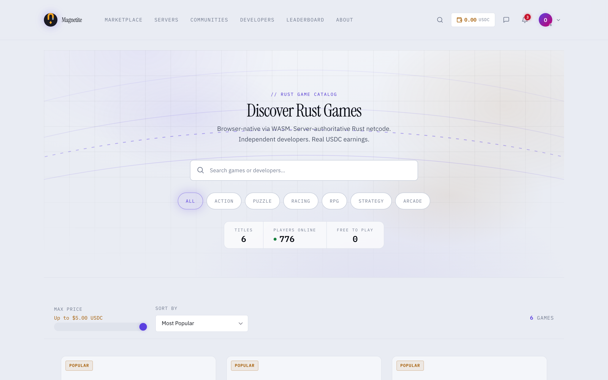
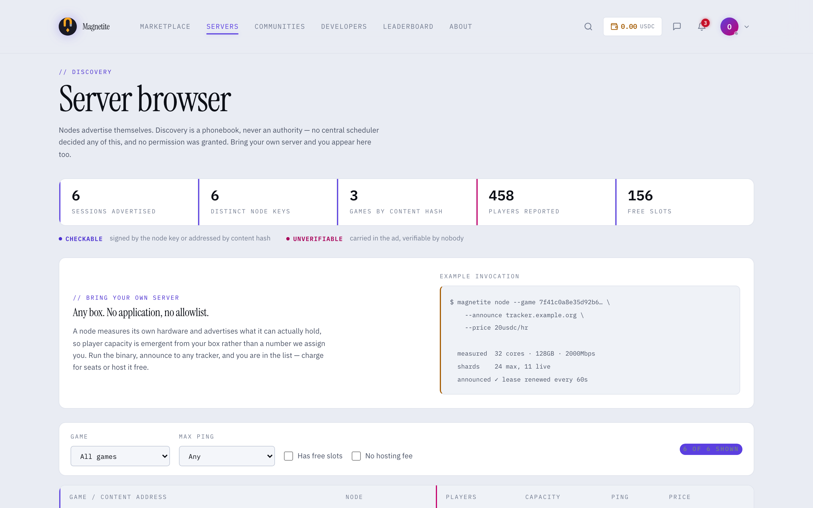
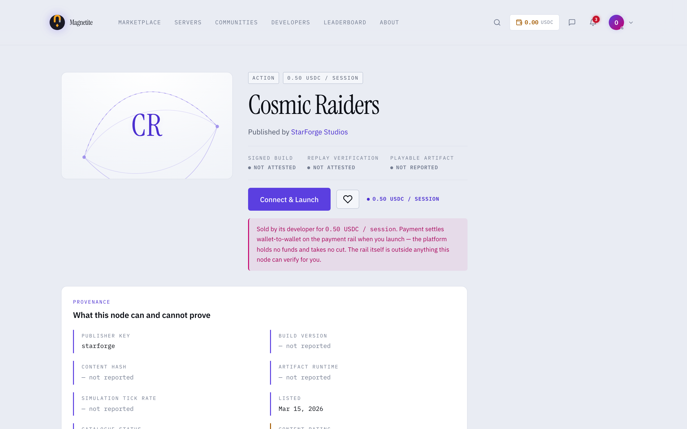
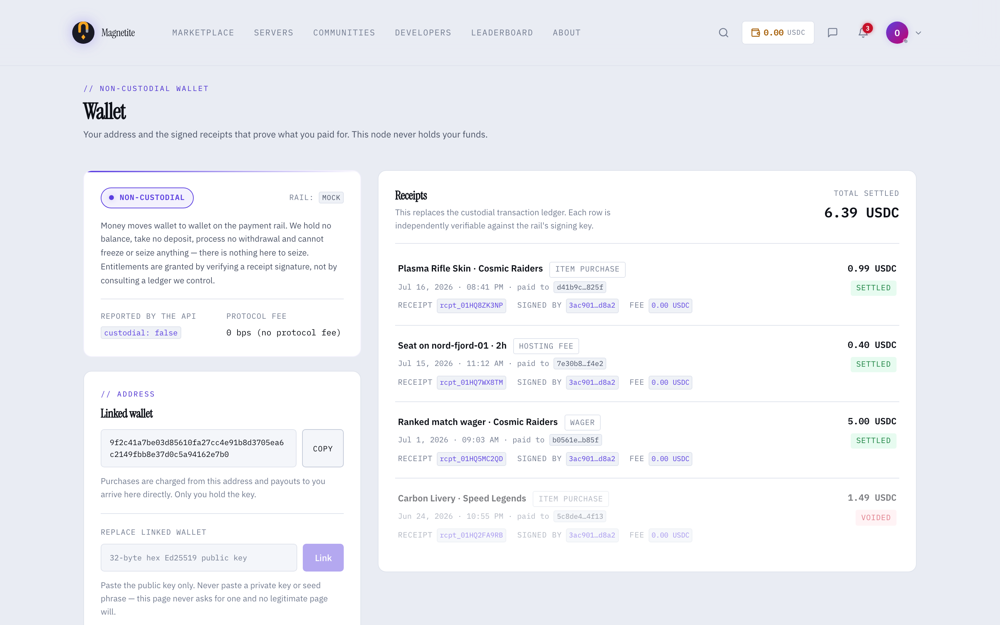
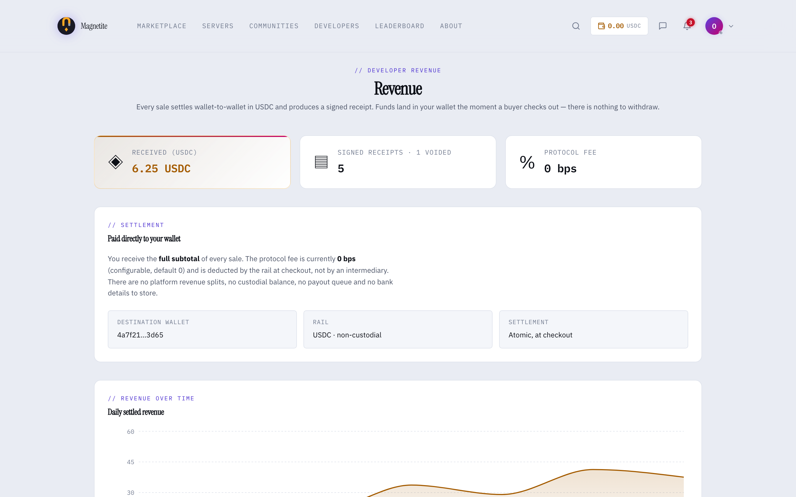

Anyone can re-run the match and check the result.
Clients send inputs, never state. A deterministic WASM sandbox steps the world, and every tick lands in a log a stranger can re-simulate and check byte for byte.
That's magnetite's one real asset — cheating isn't inferred, it's proven from the record. Seven pluggable seams keep every other service swappable, and this page marks exactly what runs today against what's still on paper.

A proof, not a promise.
Most anti-cheat guesses whether a player is lying. magnetite makes the match reproducible instead — same state, same commands, same seed, same result, on any machine — so a stranger can re-run it and compare hashes.
verify_replay does.
Inputs, never state
A client can only ask. The host validates and steps the world itself — a modified client can send a command, never assert a position, a hit or a score.
The same result anywhere
Game logic compiles to WASM under a sandboxed fuel budget, memory cap and epoch interrupt — no wall clock, no OS randomness reachable from the guest.
The reference client, for real.
Captured from the app in the repository against deterministic fixture data — the shape of the interface, not a live network. Each shot is captioned with what it does not prove.
Bring your own server
Nodes advertise themselves; discovery is a phonebook, never an authority. A node measures its own cores and RAM and derives its own shard and player capacity — never a config constant someone assigned it.
Fixture data. Cross-operator routing over the open internet is not built — proven on a LAN only.
Provenance instead of a badge
Every game states what's checkable and what isn't, on the page itself: signed build, replay verification, and playable-artifact status, each marked honestly rather than implied by a green checkmark.
This listing: signed build and replay verification both read not attested, plainly, in the UI.
Non-custodial by construction
No balances to hold — only signed receipts, each independently verifiable against the rail's own signing key. The API reports custodial: false, and the protocol fee defaults to 0 bps.

Seven seams, seven working defaults.
Nothing in the runtime, scheduler or payment path may name a provider directly — only these traits. Every seam ships a default that needs no network, no chain and no account, so the whole test suite runs fully offline.
Identity
A keypair. Sign-a-challenge login over raw Ed25519, with short-lived scoped tokens for entering external comms systems.
Default shipsNaming
Human names are a display layer; the substrate is always raw keys. Short-hash by default, an optional word-based provider proves the seam is genuinely swappable.
Default shipsBlobStore
Content addressing: the hash is the id. Local and HTTP stores today; peer-to-peer distribution is a later adapter behind the same trait.
Default shipsDiscovery
A phonebook, never an authority. Nodes sign and lease their own ads, so a tracker can refuse forgeries without gaining any say over who may host.
Default shipsCommsProvider
Chat, voice, video and streaming are adapters, not a product we build. Matrix, Jitsi, LiveKit and Owncast sit behind one trait.
Adapters shipPaymentRail
Non-custodial by design: no balances, no payout queue, no custody. What ships is the deterministic offline mock — no chain is wired up, so nothing moves real money today.
Mock rail only
InputProvider
Deterministic input — keyboard, gamepad, bot — is replay-verifiable. Attested input — anything sensor-derived — is not, and never will be: the pixels are gone and were never authoritative.
A host-side gate screens attested events for rate, cooldown, human-reachable velocity and monotonic sequence. Rejection means "not physically reachable." Acceptance means nothing stronger than "not obviously impossible."
A signature proves authorship, not truth. A cheater who signs their own fabricated numbers with their own genuine key passes every check — there is a test asserting exactly that.

Component by component.
Checked against the tree, not the pitch. DECENTRALIZATION.md is the authority on what's intended; this table is what exists right now.
| Capability | What it is | State |
|---|---|---|
| Authoritative simulation | AuthoritativeGame — deterministic validate / step in the SDK | Running |
| WASM sandbox | Wasmtime, fuel budget, memory cap, epoch interrupt; no OS randomness or wall clock in the guest | Running |
| Replay verification | ReplayLog + verify_replay — re-simulate from scratch and locate tampering | Running |
| Anti-cheat validators | Composable validator chain, trust scoring, warn / kick / ban escalation | Running |
| Zero-backend dev loop | magnetite dev — builds to wasm and serves a live match with no server at all | Running |
| Seam crate | Every seam a trait with a default needing no external service; CI runs fully offline | Running |
| Content-addressed games | Game id = hash of wasm + manifest; loaded by hash with BLAKE3 verification, fail-closed | Running |
| Capacity-elastic node | Node measures cores and RAM, derives its own shard and player budget — never a config constant | Running |
| Signed discovery | Self-advertised SessionAds, signed, leased and TTL-capped; LAN plus a dumb HTTP tracker | Running |
| Comms adapters | Matrix, Jitsi, LiveKit, Owncast and a builtin fallback behind one trait | Running |
| Shard migration | Two-phase, epoch-fenced handoff, tested in-process and over a LAN; every partial failure keeps the source authoritative | Running · LAN |
| Cluster membership | Deny-by-default operator allowlist of node public keys, checked at three separate points | Running · LAN |
| Session follow | Signed, single-use redirects move players with their shard; a forged redirect is inert | Running · LAN |
| Attested input wire | Signed events reach a live node over a real socket, rate-limited then verified then gated | Running · LAN |
| WAN / internet fleets | NAT traversal, relaying, real-world routing between operators not on one LAN | Absent |
| On-chain payment rail | Real settlement behind PaymentRail. The Stellar testnet rail lands 70/70 crate tests but is not wired into the backend — payment.rs still panics without mock/solana | Mock only |
| Multi-node Sharded | The full "Bucket D" topology rung above a single operator's cluster | Specified |
| DHT discovery | Trackerless peer discovery behind the same Discovery trait | Specified |
| Gesture / sensor producer | Anything that produces an attested event — camera capture, pose model, vendor SDK | None in tree |
| Attested input consumer | A game that actually drains the accepted-event queue | None in tree |
| Pre-redesign backend | The central API and database from before the redesign. Fiat and custody are gone; parts remain | Partly removed |
- Internet-scale clusters Absent Shard handoff and cluster membership are real, tested code — over a LAN. No NAT traversal, no relay, no WAN validation. Nodes must already be directly reachable.
- Money Mock only Wallet-to-wallet splits, receipts, escrow — all modelled. What ships is a deterministic mock that signs receipts offline. Fiat and custody were removed outright; no chain replaced them.
- Anything using attested input None in tree The wire accepts, screens and acknowledges signed events. Nothing produces one — no camera, no pose model — and no game consumes one either. Both ends are missing on purpose: the seam exists to draw the boundary, not to ship gesture control.
-
The redesign itself In progress
magnetite is mid-conversion from a conventional central-backend platform to the no-cloud model in
DECENTRALIZATION.md. Treat that spec as intent, the ledger above as state.
A game is a crate that implements one trait.
The dev loop needs no server, no account and no network — and it's the path most exercised in the repository.
# install the CLI from the repo $ cargo install --path magnetite-cli # scaffold a crate implementing AuthoritativeGame $ magnetite new my-game $ cd my-game # cargo build --release --target wasm32-wasip1 $ magnetite build # sandboxed executor + live match, ZERO backend $ magnetite dev # bring a box: it measures its own hardware $ magnetite node --advertise lan
- 1Write the game onceImplement
AuthoritativeGame— deterministic by construction. No clock, no RNG, because those are what break replay. - 2Run it with no backend
magnetite devcompiles to wasm and serves a playable match locally. No database, no account, no cloud. - 3Bring your own box
magnetite nodemeasures cores and RAM and advertises what it can hold — the player cap is emergent from hardware, not a config constant.
Listed alongside the Vulos suite
Vulos is a family of open, self-hostable software. magnetite is fully independent — it runs on hardware you control, needs no Vulos account and no Vulos infrastructure — and shares the suite's position that software should work on your own machine first and reach for a network second.
Explore Vulos →